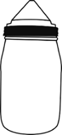
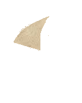
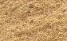
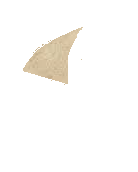
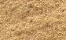

Specific gravity of fine aggregates
Objective
To determine the specific gravity of fine aggregate using pycnometer.
Apparatus used:
Pycnometer, weighing balance, glass rod etc.

Take empty weight of pycnometer along with its cap.

Empty weight of pycnometer(W1)= _____ gm
_____
Choose the type of sand


Open the cap to fill one third of pycnometer with fine aggregate and weigh the pycnometer with aggregate.
 





Weight of pycnometer + 1/3rd of fine aggregate(W2)= _____gm
_____
Add water to pycnometer upto the brim level and shake it well to remove air bubbles. Then weigh it using weigh balance.


Weight of pycnometer + 1/3rd of fine aggregate +water (W3)=_____ gm
_____
Empty the pycnometer and fill water upto brim. Weigh the pycnometer.
Weight of flask+water (W5) = _____ gm
_____
Observation
Empty weight of pycnometer(W1)= _____ gm
Weight of pycnometer + 1/3rd of fine aggregate(W2)= _____gm
Weight of pycnometer + 1/3rd of fine aggregate +water (W3) = _____ gm
Weight of pycnometer + water(W4) = _____ gm
Actual Specific gravity of fine aggregate = _____
Entered Specific gravity of fine aggregate = _____
Percentage(%) Error = _____
Average Specific gravity of fine aggregate = = _____
Trial =